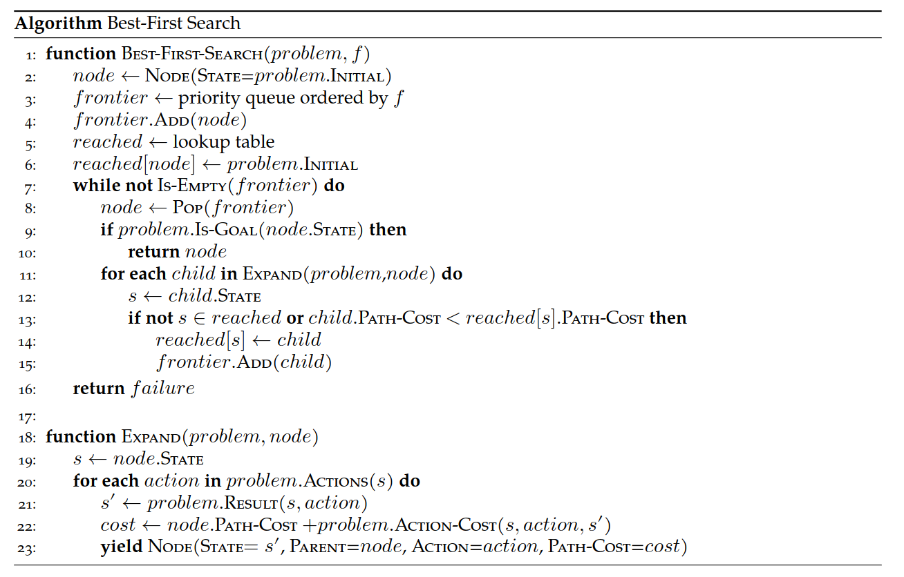

Local Search & Games
CSCI 4511/6511
Announcements
- Homework 1 is due 8 Feb 11:55 PM
- Late submission policy
- Homework 2 is due on 22 Feb at 11:55 PM
Why Are We Here?
Why Are We Here?
⠀⠀⠀⠀⠀⠀⠀⢀⣠⣤⣤⣶⣶⣶⣶⣤⣤⣄⡀⠀⠀⠀⠀⠀⠀⠀
⠀⠀⠀⠀⢀⣤⣾⣿⣿⣿⣿⣿⣿⣿⣿⣿⣿⣿⣿⣷⣤⡀⠀⠀⠀⠀
⠀⠀⠀⣴⣿⣿⣿⣿⣿⣿⣿⣿⣿⣿⣿⣿⣿⣿⣿⣿⣿⣿⡄⠀⠀⠀
⠀⢀⣾⣿⣿⣿⣿⣿⣿⣿⣿⣿⣿⣿⣿⣿⣿⣿⣿⣿⣿⠟⠁⠀⠀⠀
⠀⣾⣿⣿⣿⣿⣿⣿⣿⣿⣿⣿⣿⣿⣿⣿⣿⣿⠟⠋⠀⠀⠀⠀⠀⠀
⢠⣿⣿⣿⣿⣿⣿⣿⣿⣿⣿⣿⣿⣿⣿⠟⠋ ⠀⣀⣄⡀ ⠀⠀⣠⣄⡀
⢸⣿⣿⣿⣿⣿⣿⣿⣿⣿⣿⣿⣿⣏⠀⠀⠀ ⢸⣿⣿⣿ ⠀⢸⣿⣿⣿
⠘⣿⣿⣿⣿⣿⣿⣿⣿⣿⣿⣿⣿⣿⣿⣦⣀⠀ ⠉⠋⠁ ⠀⠀⠙⠋⠁
⠀⢿⣿⣿⣿⣿⣿⣿⣿⣿⣿⣿⣿⣿⣿⣿⣿⣷⣦⡀⠀⠀⠀⠀⠀⠀
⠀⠈⢿⣿⣿⣿⣿⣿⣿⣿⣿⣿⣿⣿⣿⣿⣿⣿⣿⣿⣷⣤⠀⠀⠀⠀
⠀⠀⠀⠻⣿⣿⣿⣿⣿⣿⣿⣿⣿⣿⣿⣿⣿⣿⣿⣿⣿⣿⠃⠀⠀⠀
⠀⠀⠀⠀⠈⠛⢿⣿⣿⣿⣿⣿⣿⣿⣿⣿⣿⣿⣿⡿⠛⠁⠀⠀⠀⠀
⠀⠀⠀⠀⠀⠀⠀⠈⠙⠛⠛⠿⠿⠿⠿⠛⠛⠋⠁⠀⠀⠀⠀⠀⠀⠀Search: Why?
- Fully-observed problem
- Deterministic actions and state
- Well-defined start and goal
- “Well-defined”

Goal Tests
Goal Tests
Best-First Search

A* Search
- Include path-cost \(g(n)\)
- \(f(n) = g(n) + h(n)\)

- Complete (always)
- Optimal (sometimes)
- Painful \(O(b^m)\) time and space complexity
A* vs. Dijkstra
(example)
- Advantages?
- Disadvantages?
Choosing Heuristics
- Recall: \(h(n)\) estimates cost from \(n\) to goal
- Admissibility
- Consistency
Choosing Heuristics
- Admissibility
- Never overestimates cost from \(n\) to goal
- Cost-optimal!
- Consistency
- \(h(n) \leq c(n, a, n') + h(n')\)
- \(n'\) successors of \(n\)
- \(c(n, a, n')\) cost from \(n\) to \(n'\) given action \(a\)
Consistency
Consistent heuristics are admissible
- Inverse not necessarily true
Always reach each state on optimal path
Implications for inconsistent heuristic?
Is Optimality Desirable?
Is Optimality Desirable?
- Yes
Is Optimality Desirable?
- Yes, but it isn’t always feasible
- A* search still exponentially complex in solution length
- Optimality is never guaranteed “inexpensively”
- We need strategies for “good enough” solutions
Satisficing
satisfy - verb - To give satisfaction; to afford gratification; to leave nothing to be desired.1
suffice - verb - To be enough, or sufficient; to meet the need (of anything)2
Weighted A* Search
- Greedy: \(f(n) = h(n)\)
- A*: \(f(n) = h(n) + g(n)\)
- Uniform-Cost Search: \(f(n) = g(n)\)
…
- Weighted A* Search: \(f(n) = W\cdot h(n) + g(n)\)
- Weight \(W > 1\)
Reducing Complexity
- Frontier Management
- Elimination of \(reached\) collection
- Reference counts
- How else?
- Other searches
Iterative-Deepening A* Search
“IDA*” Search
- Similar to Iterative Deepening with Depth-First Search
- DFS uses depth cutoff
- IDA* uses \(h(n) + g(n)\) cutoff with DFS
- Once cutoff breached, new cutoff:
- Typically next-largest \(h(n) + g(n)\)
- \(O(b^m)\) time complexity üòî
- \(O(d)\) space complexity1 üòå
Beam Search
Best-First Search:
- Frontier is all expanded nodes
Beam Search:
- \(k\) “best” nodes are kept on frontier
- Others discarded
- Alt: all nodes within \(\delta\) of best node
- Not Optimal
- Not Complete
Recursive Best-First Search (RBFS)
- No \(reached\) table is kept
- Second-best node \(f(n)\) retained
- Search from each node cannot exceed this limit
- If exceeded, recursion “backs up” to previous node
- Memory-efficient
- Can “cycle” between branches
Recursive Best-First Search (RBFS)
Heuristic Characteristics
- What makes a “good” heuristic?
- We know about admissability and consistency
- What about performance?
- Effective branching factor
- Effective depth
- # of nodes expanded
Where Do Heuristics Come From?
- Intuition
- “Just Be Really Smart”
- Relaxation
- The problem is constrained
- Remove the constraint
- Pre-computation
- Sub problems
- Learning
Local Search
What Even Is The Goal?
Uninformed/Informed Search:
- Known start, known goal
- Search for optimal path
Local Search:
- “Start” is irrelevant
- Goal is not known
- But we know it when we see it
- Search for goal
Brutal Example

Less-Brutal Example
“Real-World” Examples
- Scheduling
- Layout optimization
- Factories
- Circuits
- Portfolio management
- Others?
Objective Function
- Do you know what you want?1
- Can you express it mathematically?2
- A single value
- More is better
- Objective function: a function of state
Hill-Climbing
- Objective function
- State space mapping
- Neighbors
Hill-Climbing
The Hazards of Climbing Hills
- Local maxima
- Plateaus
- Ridges
Five Queens
Five Queens
Five Queens
Variations
- Sideways moves
- Not free
- Stochastic moves
- Full set
- First choice
- Random restarts
- If at first you don’t succeed,
you failtry again! - Complete üòå
- If at first you don’t succeed,
The Trouble with Local Maxima
- We don’t know that they’re local maxima
- Unless we do?
- Hill climbing is efficient
- But gets trapped
- Exhaustive search is complete
- But it’s exhaustive!
- Stochastic methods are ‘exhaustive’
Simulated Annealing
Simulated Annealing
- Doesn’t actually have anything to do with metallurgy
- Search begins with high “temperature”
- Temperature decreases during search
- Next state selected randomly
- Improvements always accepted
- Non-improvements rejected stochastically
- Higher temperature, less rejection
- “Worse” result, more rejection
Simulated Annealing
Local Beam Search
Recall:
- Beam search keeps track of \(k\) “best” branches
Local Beam Search:
- Hill climbing search, keeping track of \(k\) successors
- Deterministic
- Stochastic
Local Beam Search
The Real World Is Discrete

(it isn’t)
The Real World Is Not Discrete
- Discretize continuous space
- Works iff no objective function discontinuities
- What happens if there are discontinuities?
- How do we know that there are discontinuities?
Gradient Descent
- Minimize loss instead of climb hill
- Still the same idea
Consider:
- One state variable, \(x\)
- Objective function \(f(x)\)
- How do we minimize \(f(x)\) ?
- Is there a closed form \(\frac{d}{dx}\) ?
Gradient Descent
Multivariate \(\vec{x} = x_0, x_1, ...\)
Instead of derivative, gradient:
\(\nabla f(\vec{x}) = \left[ \frac{\partial f}{\partial x_0}, \frac{\partial f}{\partial x_1}, ...\right]\)
“Locally” descend gradient:
\(\vec{x} \gets \vec{x} + \alpha \nabla f(\vec{x})\)
Probability
Probability
Probability

Random Events
- Always in the future
- We know something about them
- We don’t know the outcome with certainty
- Distinctions
- Probabilities
Games
First, We Will Play A Game
- Pick a partner
- Place 11 pieces of candy between you
- Alternating turns, either:
- Take one piece
- Take two pieces
- Last person to take a piece wins all of the candy
Second, We Will Play A Game
- Place 11 pieces of candy between you
- Alternating turns:
- First choose
0,1, or2 - Then
- Roll two dice, and add the sum the dice values with your number
- Take this sum
% 3 - Take that many pieces of candy
- Except: If you roll a 2 (both dice show 1), skip your turn
- First choose
- Last person to take a piece wins all of the candy

Algorithms for Games
Adversity
So far:
- The world does not care about us
- This is a simplifying assumption!
Reality:
- The world does not care us
- …but it wants things for “itself”
- …and we don’t want the same things
The Adversary
One extreme:
- Single adversary
- Adversary wants the exact opposite from us
- If adversary “wins,” we lose
üòê
Other extreme:
- An entire world of agents with different values
- They might want some things similar to us
- “Economics”
üòê
Simple Games
- Two-player
- Turn-taking
- Discrete-state
- Fully-observable
- Zero-sum
- This does some work for us!
Max and Min
- Two players want the opposite of each other
- State takes into account both agents
- Actions depend on whose turn it is
Minimax
- Initial state \(s_0\)
- Actions(\(s\)) and To-move(\(s\))
- Result(\(s, a\))
- Is-Terminal(\(s\))
- Utility(\(s, p\))
Minimax
Minimax

More Than Two Players
- Two players, two values: \(v_A, v_B\)
- Zero-sum: \(v_A = -v_B\)
- Only one value needs to be explicitly represented
- \(> 2\) players:
- \(v_A, v_B, v_C ...\)
- Value scalar becomes \(\vec{v}\)
Society
- \(>2\) players, only one can win
- Cooperation can be rational!
Example:
- A & B: 30% win probability each
- C: 40% win probability
- A & B cooperate to eliminate C
- \(\rightarrow\) A & B: 50% win probability each
…what about friendship?
Minimax Efficiency
Pruning removes the need to explore the full tree.
- Max and Min nodes alternate
- Once one value has been found, we can eliminate parts of search
- Lower values, for Max
- Higher values, for Min
- Remember highest value (\(\alpha\)) for Max
- Remember lowest value (\(\beta\)) for Min
Pruning
Heuristics üòå
- In practice, trees are far too deep to completely search
- Heuristic: replace utility with evaluation function
- Better than losing, worse than winning
- Represents chance of winning
- Chance? üé≤üé≤
- Even in deterministic games
- Why?
More Pruning
- Don’t bother further searching bad moves
- Examples?
- Beam search
- Lee Sedol’s singular win against AlphaGo
Other Techniques
- Move ordering
- How do we decide?
- Lookup tables
- For subsets of games
Monte Carlo Tree Search
- Many games are too large even for an efficient \(\alpha\)-\(\beta\) search üòî
- We can still play them
- Simulate plays of entire games from starting state
- Update win probability from each node (for each player) based on result
- “Explore/exploit” paradigm for move selection
Choosing Moves
- We want our search to pick good moves
- We want our search to pick unknown moves
- We don’t want our search to pick bad moves
- (Assuming they’re actually bad moves)
Select moves based on a heuristic.
Games of Luck
- Real-world problems are rarely deterministic
- Non-deterministic state evolution:
- Roll a die to determine next position
- Toss a coin to determine who picks candy first
- Precise trajectory of kicked football1
- Others?
Solving Non-Deterministic Games
Previously: Max and Min alternate turns
Now:
- Max
- Chance
- Min
- Chance
üò£
Expectiminimax
- “Expected value” of next position
- How does this impact branching factor of the search?
ü´†
Filled With Uncertainty
What is to be done?
- Pruning is still possible
- How?
- Heuristic evaluation functions
- Choose carefully!
Non-Optimal Adversaries
- Is deterministic “best” behavior optimal?
- Are all adversaries rational?
- Expectimax
References
Stuart J. Russell and Peter Norvig. Artificial Intelligence: A Modern Approach. 4th Edition, 2020.
Mykal Kochenderfer, Tim Wheeler, and Kyle Wray. Algorithms for Decision Making. 1st Edition, 2022.
Stanford CS231
Stanford CS228
UC Berkeley CS188